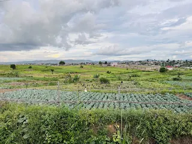
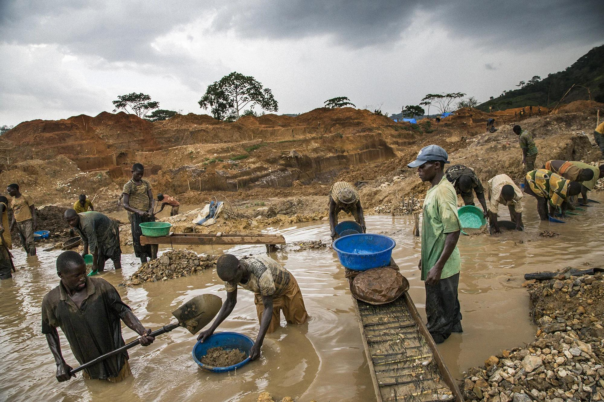
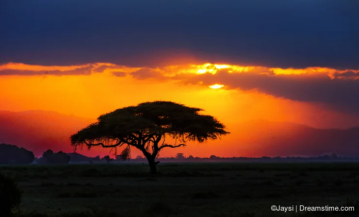
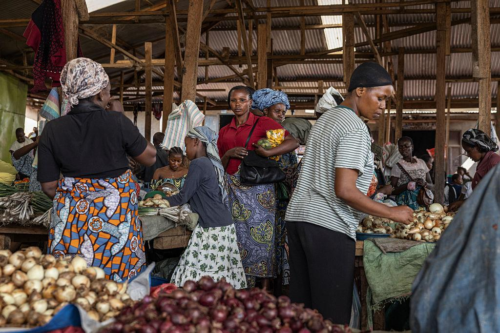
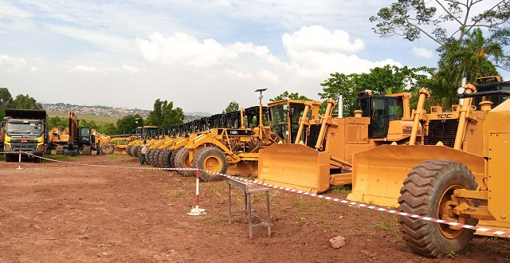

Investment in Ituri Province
Ituri Province has economic potential in several sectors, including agriculture, mining, tourism, trade and infrastructure. Investment in these areas can support job creation, improve local services and contribute to economic development.
Agriculture and Agribusiness
Agriculture is an important activity for many communities in Ituri. Opportunities include crop production, food processing, livestock farming, storage facilities and agricultural transport. Investment can help improve productivity and access to markets.

Mining and Natural Resources
Ituri has mineral resources, including gold. Responsible investment in the mining sector can create employment and support economic activity. Environmental protection, transparency and compliance with applicable laws are important considerations.

Tourism and Hospitality
Ituri's natural environment, forests, wildlife and cultural heritage offer opportunities for tourism development. Potential areas include accommodation, visitor services, cultural tourism and responsible nature-based tourism.

Trade and Business
Trade and small businesses contribute to the local economy. Opportunities exist in retail, wholesale distribution, transportation, storage and other business services. Supporting local entrepreneurs can strengthen communities.

Infrastructure and Energy
Investment in roads, electricity, clean water and telecommunications can improve connectivity and create better conditions for businesses. These services are important for long-term economic growth.

Responsible Investment
Sustainable investment should respect local communities, protect the environment and follow the laws of the Democratic Republic of the Congo. Investors should obtain appropriate permits and seek reliable legal and professional advice before starting business activities.
View Future Plans